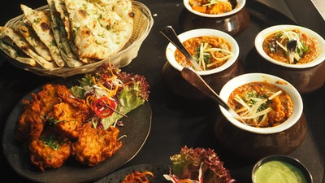

all kinds of food are available here
As the bustling capital of Bangladesh, it's no wonder that Dhaka's culinary scene is something special. This cultural hub offers plenty in the way of delicious dishes, from authentic Bangladesh recipes perfected over generations, to fabulous fusion dishes that bring together the best flavours and ingredients from across southern Asia and beyond. With foodpanda, you've easy access to this diverse dining scene, with straightforward online ordering and express delivery so you can enjoy eating in style without breaking a sweat. Whether it's a brilliant brunch or last-minute lunch, mouth-watering dinner or late-night feast, you've plenty to pick from in Dhaka.
Order food online the easy way with foodpanda. Whether you're too tired to cook, craving fast food favourites or looking to try something new, it's never been easier to order in takeaway in Dhaka. Never used foodpanda before? Simply head to the website or launch the app and enter your location to bring up a list of restaurants delivering to your area. Once you find something that stirs your appetite, click to open the restaurant menu. Simply tap to add desired items to your basket, before heading to the checkout to pay once you've everything you need. Once you've done that, all you need to do is relax and await your delivery.
Like much of Bangladesh, Dhaka is known for its staples of fish, vegetables, lentils and rice, while curries are commonplace. There's plenty of comforting flavours and generous portions to be found at many a restaurant in this bustling city. Feast on fresh naans and kebabs packed with succulent fillings, bite into meaty biryani or indulge your taste buds with local delicacies like Morog Pulao. However big or small your appetite, you'll find something to satisfy when you opt to order food delivery with foodpanda.
my facebook page written by omit minji.